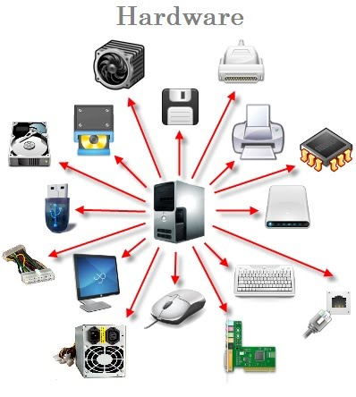
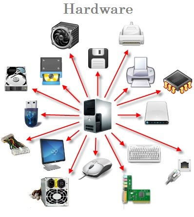

La ingeniería informática ha sido protagonista indiscutible de la revolución social, industrial y económica que está suponiendo la digitalización.
El evento culmina los 40 años de formación universitaria de los profesionales que están protagonizando este cambio y que están llamados a
ingeniar el futuro digital.Este reto lo afronta la Ingeniería Informática desde la madurez plena de los estudios y
de la profesión que confieren estos 40 años.
 
